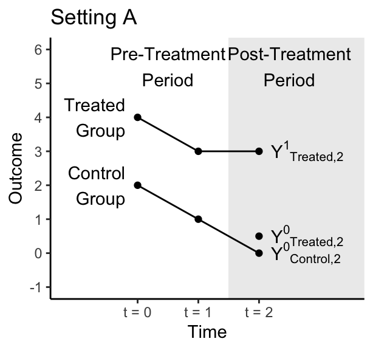
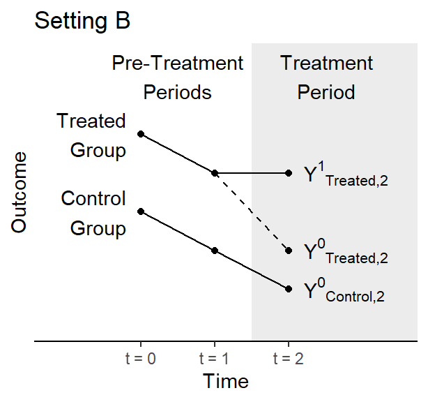
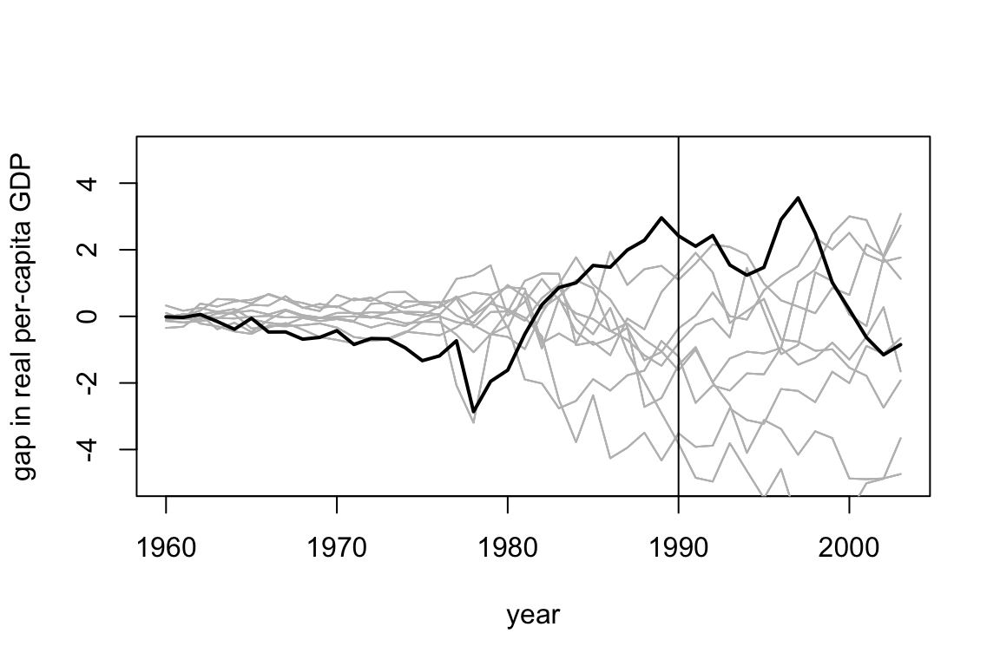
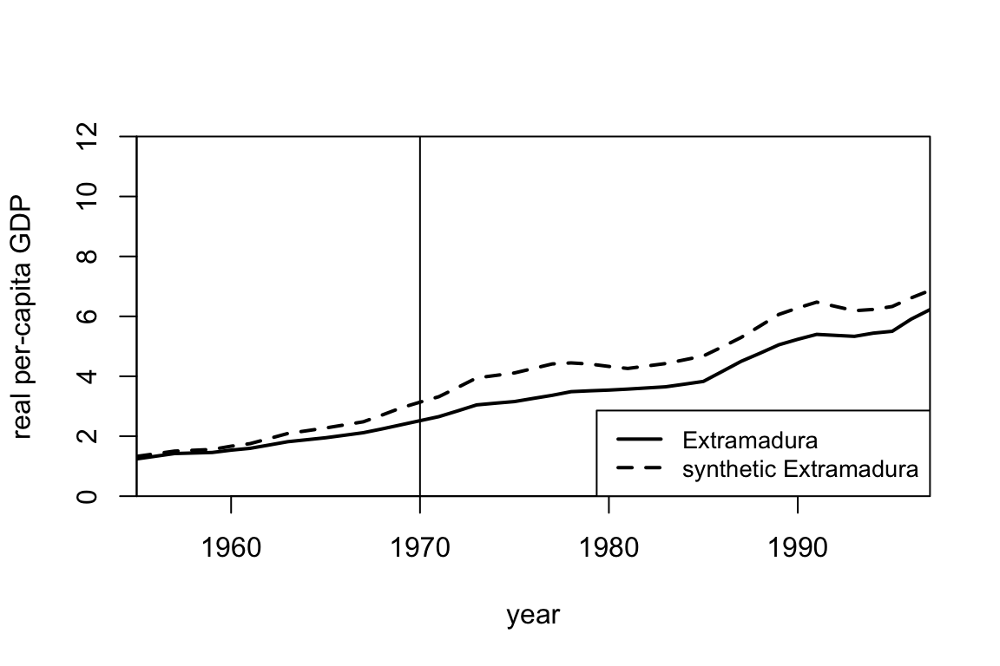

Problem Set 6. Difference in Difference + Synthetic Control
Relevant material will be covered by Nov 9. Problem set is due Nov 16.
To complete the problem set, feel free to Download the .Rmd. Omit your name so we can have anonymous peer feedback. Submit the PDF on Canvas.
The learning goals of completing this problem set are to engage with conceptual assumptions for difference in difference and synthetic control.
1. (25 points) Difference in Difference
In the figures below, the treated group becomes treated between time 1 and time 2. The control group never becomes treated. Figures are hypothetical scenarios that depict true potential outcomes even if those outcomes would not be observed in an actual study.

1.2 (5 points)
In actual data analysis, can we ever know for certain whether we are in Setting A or Setting B? If the answer is no, then tell us which outcome cannot be observed.
1.3 (5 points)
A researcher comes to you with the data below, which depict only observed outcomes. That researcher wants to run a difference in difference analysis. Here, we have not depicted the counterfactual outcome because the researcher would not know it.
Why is the parallel trends assumption doubtful in this setting?
1.4 (5 points)
A researcher is interested in the causal effect of a minimum wage increase on employment. They plan to study only the U.S., and they are interested in a time when the minimum wage rose simultaneously at every place in the U.S. Why won’t a difference in difference design work for the researcher’s question?
2. (25 points) Synthetic Control
In discussion, we considered the paper by Abadie and Gardeazabal (2003) which estimates the effect of terrorist conflict in the Basque Country on GDP per capita. Using synthetic control, they construct a synthetic version of Basque Country. We show the selected weights and plot the gap between the observed and synthetic Basque Country below.
## w.weights unit.names unit.numbers
## 2 0.000 Andalucia 2
## 3 0.000 Aragon 3
## 4 0.000 Principado De Asturias 4
## 5 0.000 Baleares (Islas) 5
## 6 0.000 Canarias 6
## 7 0.000 Cantabria 7
## 8 0.000 Castilla Y Leon 8
## 9 0.000 Castilla-La Mancha 9
## 10 0.851 Cataluna 10
## 11 0.000 Comunidad Valenciana 11
## 12 0.000 Extremadura 12
## 13 0.000 Galicia 13
## 14 0.149 Madrid (Comunidad De) 14
## 15 0.000 Murcia (Region de) 15
## 16 0.000 Navarra (Comunidad Foral De) 16
## 18 0.000 Rioja (La) 182.1 (10 points) Motivation
Instead of selecting the weights using synthetic control, we could have instead estimated the potential outcome for Basque Country using a regression approach. Specifically, we consider the data prior 1970 and simply regress the GDP per capita in the Basque region onto the GDP per capita in other regions to find coefficients \(\hat \beta\) so that \[\widehat{Y^{0}}_{t, Basque} = \sum_j \hat \beta_{j} Y^{0}_{t, j}.\] We then use the estimated \(\hat \beta\) to predict \(\widehat{Y^{0}}_{t, Basque}\) after treatment occurs. The weights and gap plot are shown below. We haven’t included all the regions in the code below, but you don’t need to worry about that.
Looking at the estimated weights sand the gap plots, why might you prefer the synthetic control estimate over the regression based estimate? Why might you prefer the regression estimate over the synthetic control estimate?
## weights name id
## 1 -0.632 Aragon 3
## 2 1.256 Principado De Asturias 4
## 3 -0.586 Baleares (Islas) 5
## 4 0.438 Cantabria 7
## 5 0.594 Cataluna 10
## 6 -0.788 Comunidad Valenciana 11
## 7 0.155 Madrid (Comunidad De) 14
## 8 -0.245 Navarra (Comunidad Foral De) 16
## 9 1.136 Rioja (La) 182.2 (7.5 points) Assessing fit
Using the same dataset, suppose we wanted to estimate the causal effect for some policy implemented in Extramadura (another region in Spain) in 1970. Running synthetic control gives an estimate of almost -1000 dollars in 1990. Looking at the plots below, why might you be skeptical of the resulting estimate?

2.3 (7.5 points) Hypothesis testing
Suppose we used synthetic control for each of the other regions in Spain as a placebo test. Below, we show a hypothetical plot for the gap between the observed and synthetic values for each region. The difference between observed and synthetic Basque country is shown in the dark black line and the others are shown in gray. Note this is made up data. However, if this were the real plot you saw, would you be confident that there was a non-zero causal effect for Basque Country? Explain why or why not.